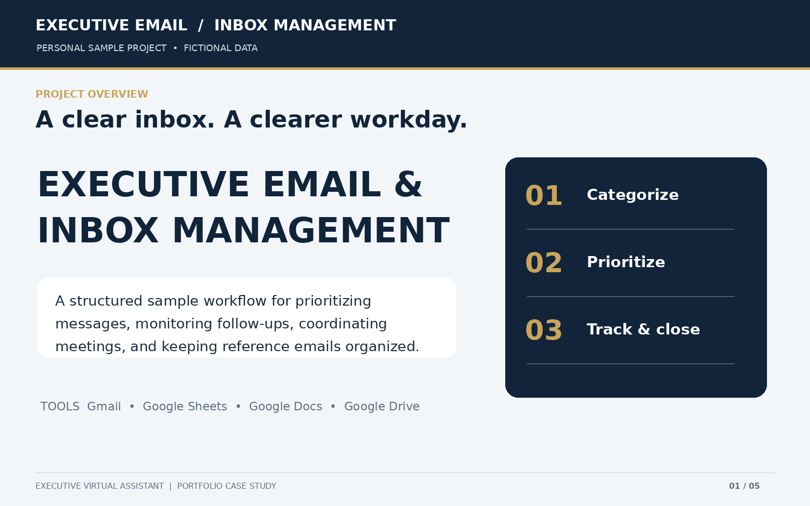
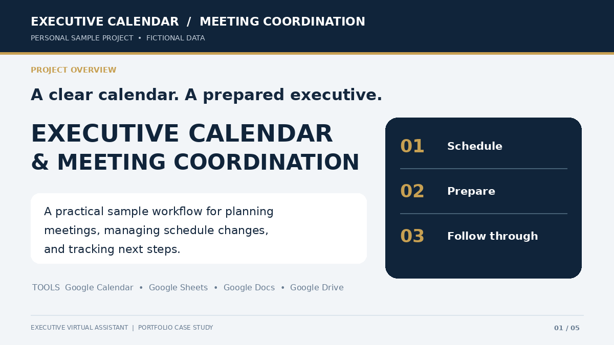
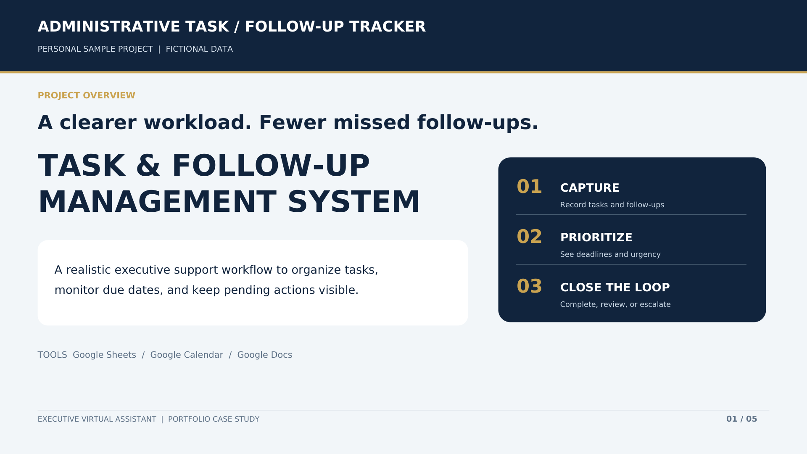
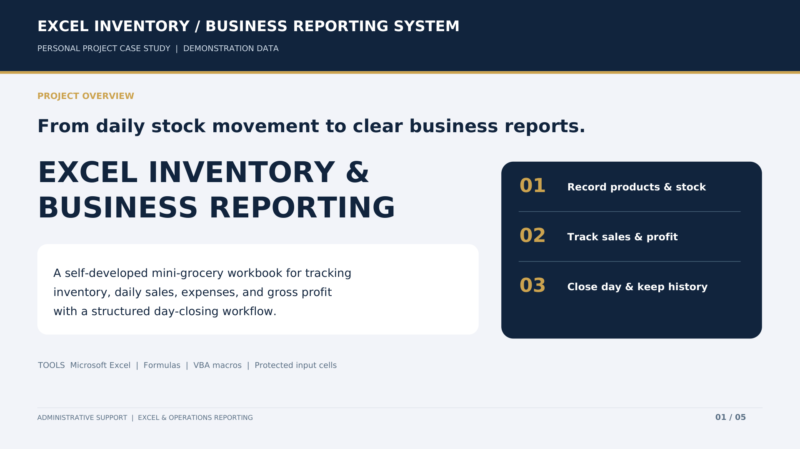
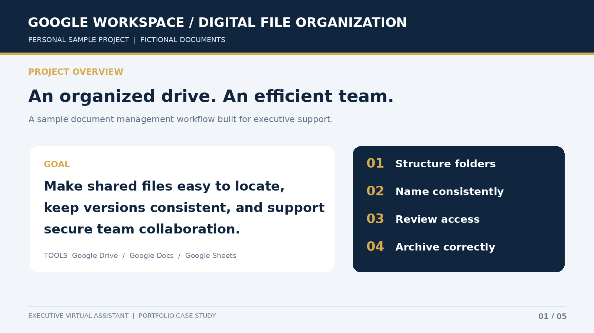

Executive Assistance
Calendar coordination, meeting preparation, scheduling support, and organized action items.
I'm Francis Jade Cerezo, an administrative professional with 8 years of office experience and hands-on remote executive support exposure. I help make daily operations clearer, more organized, and easier to manage.
My background includes eight years in office administration (2017–2025), supporting recordkeeping, documents, spreadsheets, inventory monitoring, administrative reporting, and day-to-day operations.
My remote support work includes email organization, calendar coordination, meeting preparation, research, task monitoring, and Google Workspace workflows. I value clear communication, confidentiality, and dependable follow-through.
View my Upwork profile ↗Practical, flexible administrative services built around your priorities.
Calendar coordination, meeting preparation, scheduling support, and organized action items.
Message categorization, priority tracking, follow-up monitoring, and clean communication workflows.
File organization, document preparation, data entry, online research, and business records.
Excel and Google Sheets tracking, reports, task monitoring, and process documentation.
Practical work samples that demonstrate how I organize information, coordinate responsibilities, and support day-to-day operations.
Project transparency: Four projects are personal workflow demonstrations using fictional records. The Excel inventory system is a personal workbook project; its portfolio figures are sample data.

Inbox triage, priority labels, action tracking and follow-up workflows.
View case study
Weekly scheduling, meeting preparation, confirmations and action items.
View case study
Task prioritization, ownership, deadlines and pending-response monitoring.
View case study
Spreadsheet system with inventory, sales history, reporting and VBA-assisted daily closing.
View case study
Logical folder structure, naming conventions, sharing guidance and archive workflow.
View case studyOrganized work comes from clear processes and consistent execution.
Gmail · Google Calendar · Google Drive · Docs · Sheets
Excel · Word · Spreadsheet management · Reporting
Data entry · Research · File management · Task coordination
Attention to detail · Communication · Confidentiality · Follow-through
Whether you need help organizing your inbox, coordinating your calendar, or keeping important tasks on track, I'm open to discussing how I can support your workflow.
Executive Assistant · Administrative Support · Workflow Support